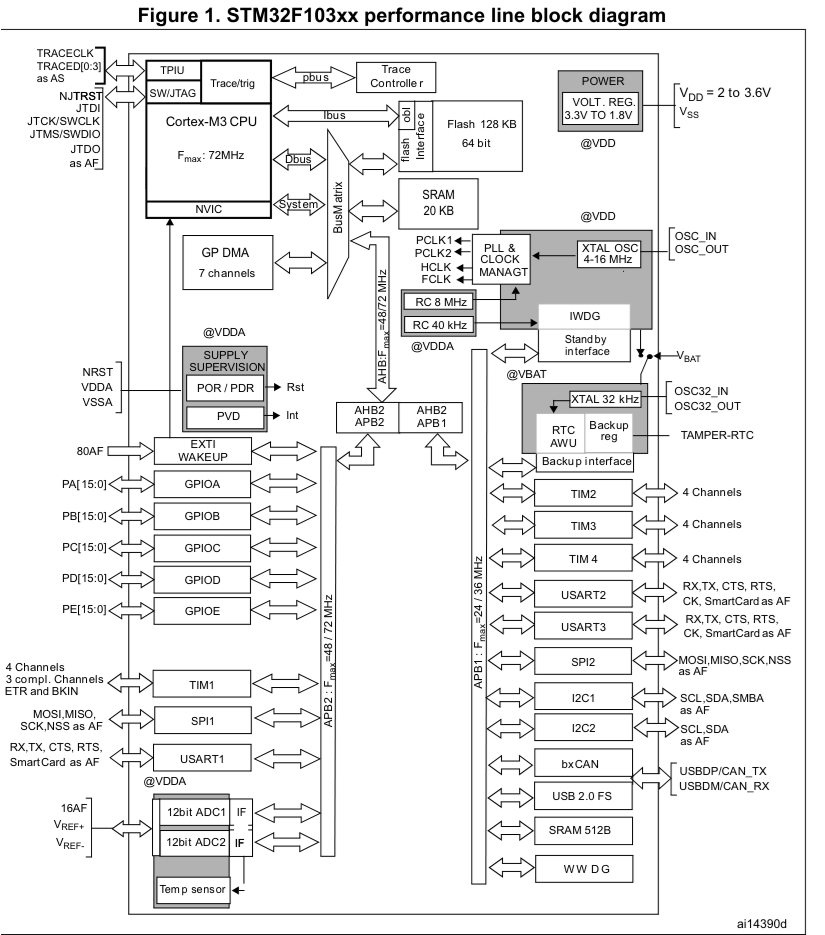
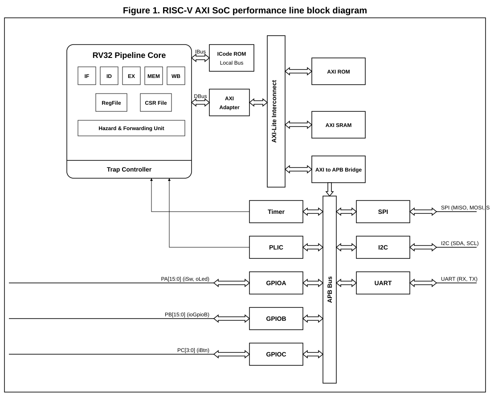
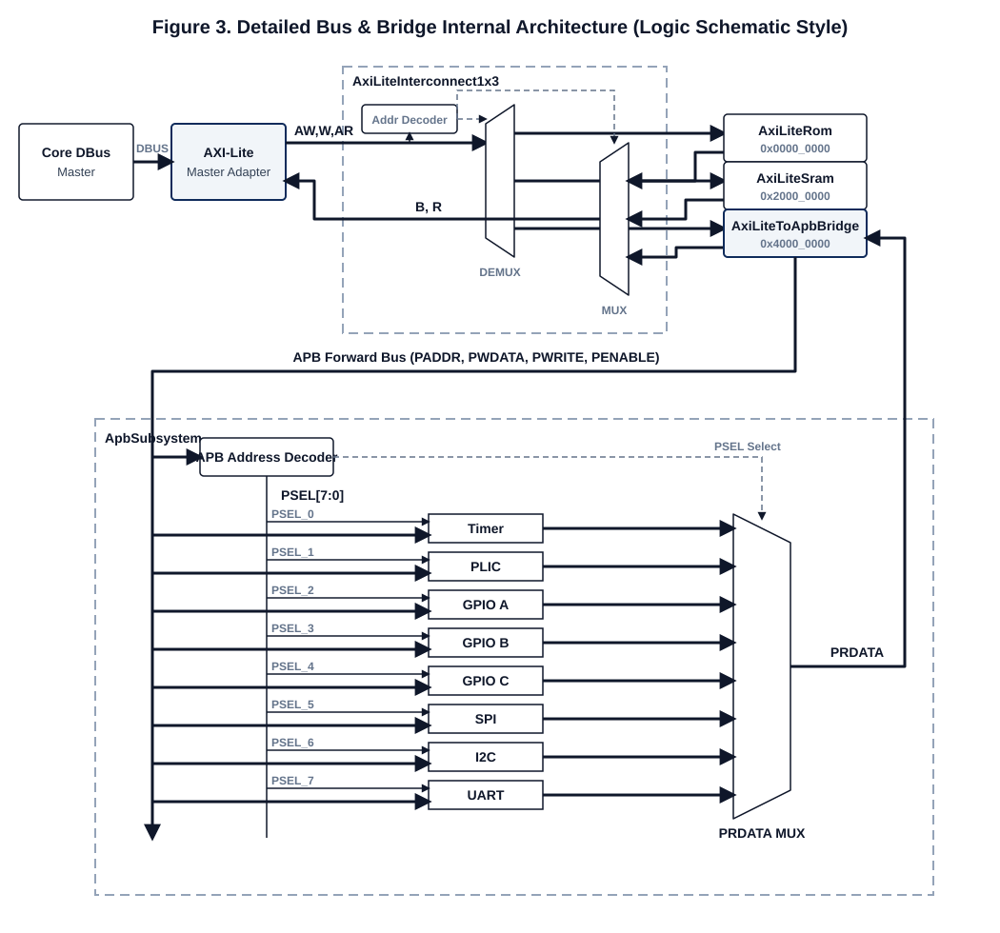
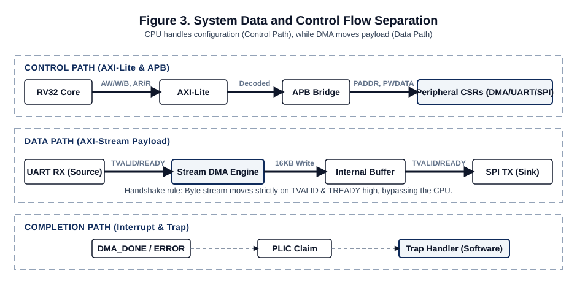
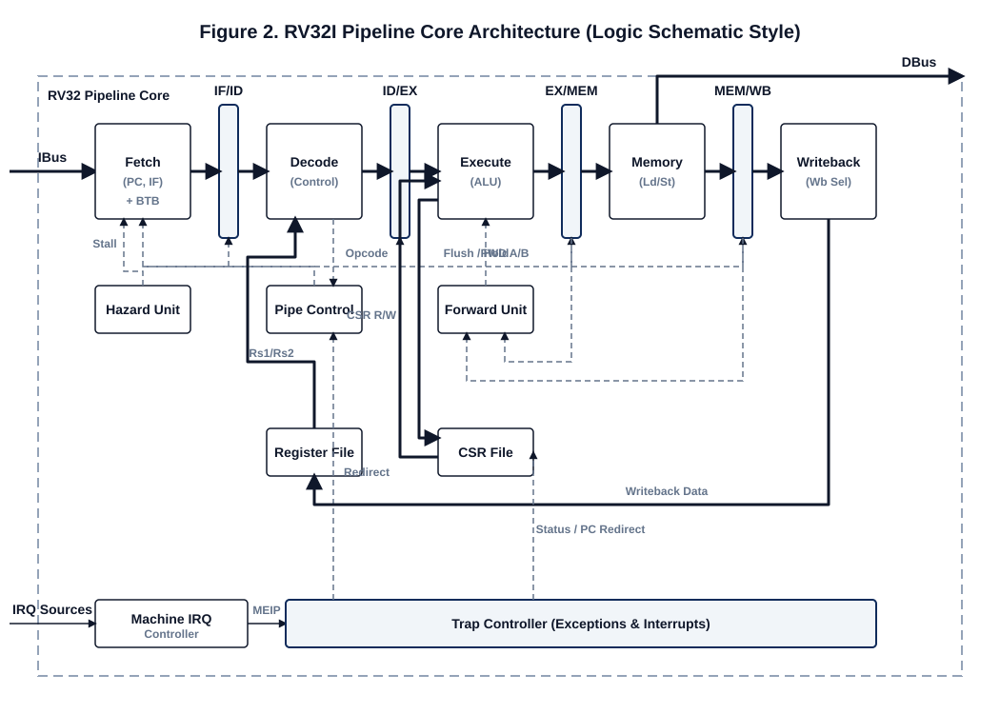
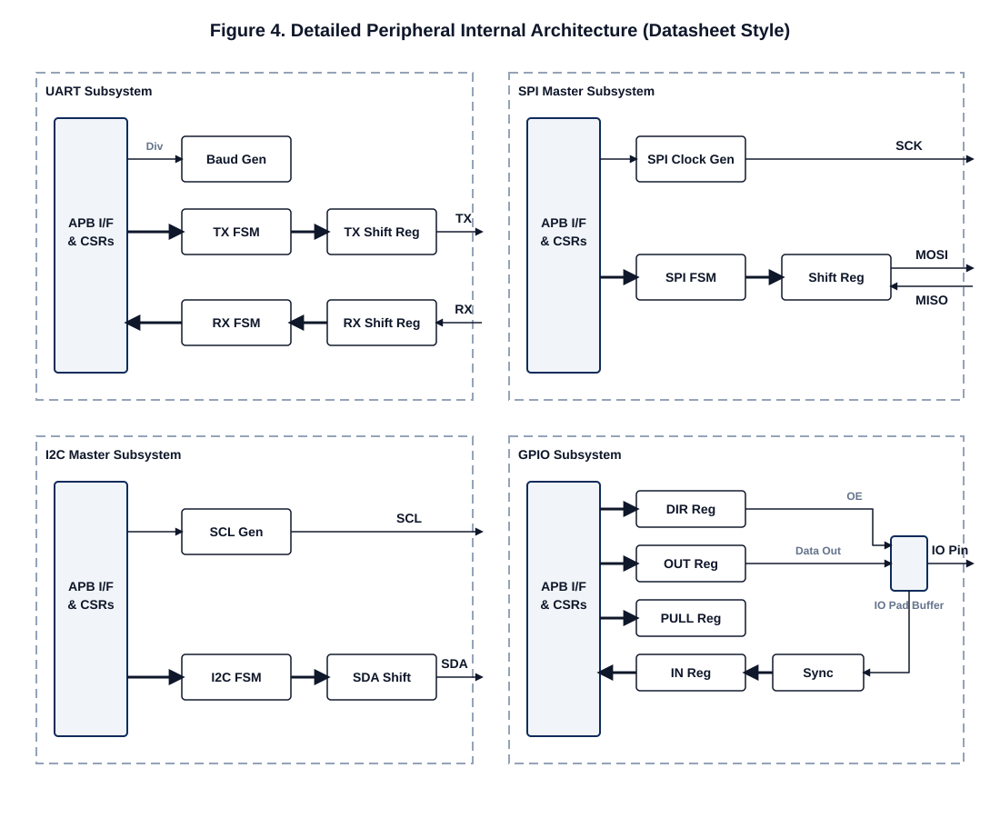
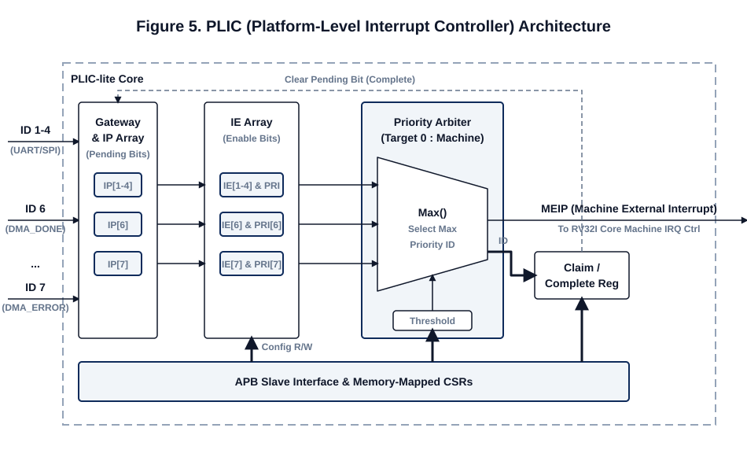
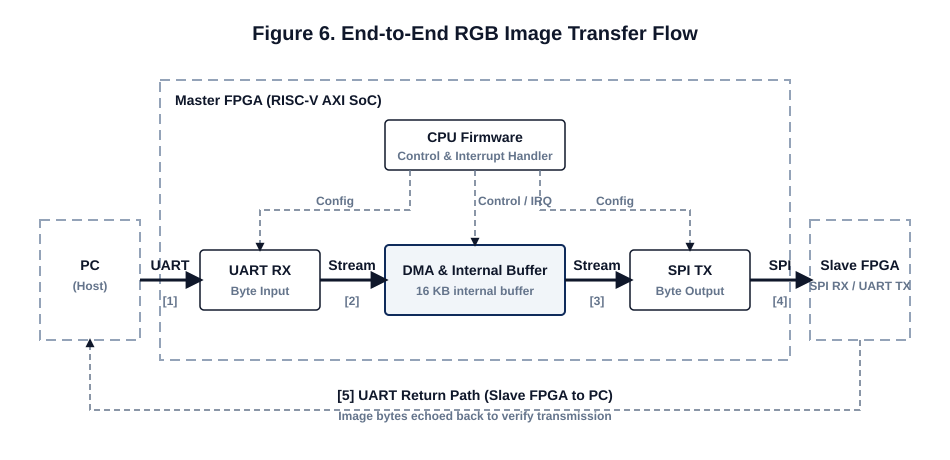
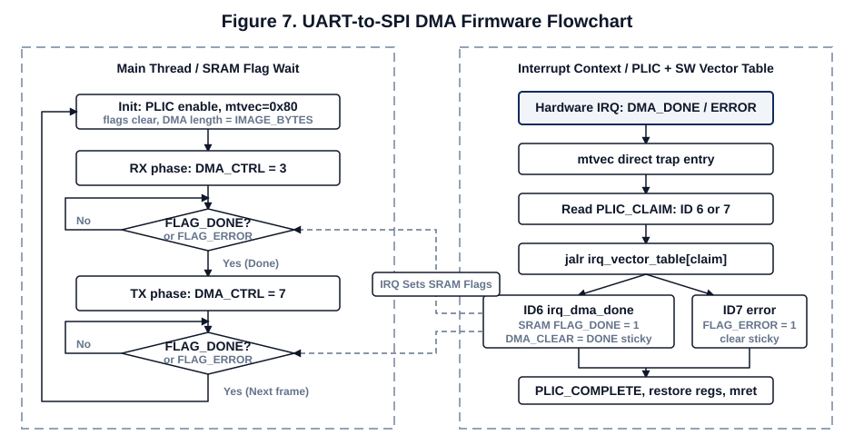

Mini MCU Project
A custom RV32I mini-MCU with AXI-Lite, APB, and AXI-Stream DMA
A custom RV32I mini-MCU with AXI-Lite, APB, and AXI-Stream DMA
CPU 하나만이 아니라 MCU처럼 동작하는 최소 시스템을 구성합니다.
CPU가 bus를 통해 GPIO, UART, SPI, Timer, PLIC 같은 주변장치를 제어합니다.

STM32F103의 전체 구조를 참고하여 RV32I core, AXI-Lite/APB, AXI-Stream DMA 기반으로 재설계한 SoC 본체


Core DBus ➔ AXI-Lite Master Adapter를 거쳐 하나의 Master로 진입합니다.
Address Decoder가 주소를 판별하고, Demux/Mux를 통해 ROM, SRAM, APB Bridge 3개의 Slave로 라우팅합니다.
AxiLiteToApbBridge를 거친 PADDR, PWDATA 등의 신호는 다시 APB Address Decoder를 통해 각 Peripheral 칩셋을 구동합니다.
SocFpgaTop은 Board pin, Clock(100MHz), Reset 스위치 등을 정리하는 Wrapper 역할을 수행합니다.
실질적인 Core, Bus, Peripheral, DMA 구조는 내부 SocTop에서 통합됩니다.
| Block | Base 주소 | 역할 |
|---|---|---|
| ROM Window | 0x0000_0000 |
DBus-visible ROM window (IBus fetch는 IcodeLocalRom) |
| SRAM | 0x2000_0000 |
Stack, Software flags |
| APB Window | 0x4000_0000 |
AXI-Lite to APB bridge |
| Timer | 0x4000_0000 |
Timer / IRQ |
| GPIOA | 0x4001_0000 |
Switch / LED |
| GPIOB | 0x4002_0000 |
GPIO 확장 |
| SPI | 0x4003_0000 |
SPI Master |
| I2C | 0x4004_0000 |
I2C Master |
| UART | 0x4005_0000 |
PC Serial |
| DMA | 0x4006_0000 |
AXI-Stream DMA |
| GPIOC | 0x4007_0000 |
GPIO 확장 |
| PLIC-lite | 0x400F_0000 |
Interrupt 제어기 |


모든 주변장치는 표준화된 APB 노드를 통해 연결되며, 일관된 CSR(Control/Status Register) 인터페이스를 제공합니다.
컨트롤러의 최종 입출력은 동기화 회로(Synchronizer)를 거쳐 물리적 IO Pad Buffer와 안전하게 연결됩니다.


UART/SPI/DMA에서 발생한 raw IRQ는 Gateway를 거쳐 request pulse가 되고, complete 전까지 중복 요청을 막습니다.
pending source 중 enable되어 있고 threshold보다 priority가 높은 항목만 CPU가 claim할 수 있는 후보가 됩니다.
Arbiter가 priority가 가장 높은 source ID를 고르면 external IRQ가 올라갑니다. CPU는 CLAIM으로 ID를 읽고, 처리 후 COMPLETE에 같은 ID를 써서 정리합니다.
하드웨어 인터럽트 이벤트 발생 (예: DMA 전송 완료)
PLIC에서 우선순위를 판별하여 Machine External Interrupt (MEIP) Assert
Trap Controller가 실행 흐름을 멈추고 CSR (mepc, mcause) 하드웨어 업데이트
프로그램 카운터(PC)가 mtvec=0x80 Direct Trap Entry 진입
| CSR | 역할 설명 |
|---|---|
mtvec |
Trap entry base (이번 firmware image는 0x80) |
mie.MEIE |
Machine external interrupt enable |
mstatus.MIE |
Global machine interrupt enable |
mcause |
Interrupt 여부와 원인 기록 |
mepc |
Trap 발생 전 PC 저장 |
최종 interrupt routine은 둘 다 ROM/Flash의 code 영역에 있습니다. 차이는 ARM NVIC는 하드웨어가 vector table에서 handler 주소를 직접 읽어 PC를 옮기고, 본 설계는 mtvec direct 진입 후 software가 PLIC Claim ID로 handler를 고른다는 점입니다.
| 비교 항목 | ARM NVIC | 현재 RISC-V firmware 설계 |
|---|---|---|
| Table Lookup 주체 | Hardware | Software |
| Entry 방식 | IRQ number ➔ Vector entry 이동 | mtvec=0x80 Direct Trap으로 통합 진입 |
| Source 구분 | IRQ number | PLIC Claim ID |
| Handler 분기 | Hardware가 Handler PC Load | Software가 Table Load 후 jalr 분기 |
| Routine 위치 | Flash/ROM의 ISR code | ROM image의 trap/handler code |
oExternalIrq가 올라가고 core는 external interrupt trap 진입CLAIM ID를 읽고, 처리 후 COMPLETE에 같은 ID를 writehandler 주소 대신 CPU에게 interrupt source ID를 알려줍니다.
| ID | Source | Priority | 현재 demo |
|---|---|---|---|
| 1 | UART_TX | 1 | 미사용 |
| 2 | UART_RX | 1 | 미사용 |
| 3 | SPI_TX | 1 | 미사용 |
| 4 | SPI_RX | 1 | 미사용 |
| 5 | Reserved / ext hook | 1 | 미사용 |
| 6 | DMA_DONE | 1 | handler 연결 |
| 7 | DMA_ERROR | 1 | handler 연결 |
| 8 | Reserved / ext hook | 1 | 미사용 |

RGB payload는 CPU register나 SRAM을 거치면서 한 byte씩 복사하지 않고, 오직 DMA internal buffer와 Stream handshake로 통신합니다.
| Offset | Register | 사용 예 (DMA stream scenario) |
|---|---|---|
0x00 |
CTRL |
3: RX start+IRQ7: TX start+IRQ |
0x08 |
LEN_BYTES |
기본 전송 크기 12288 |
0x10 |
CLEAR |
Done/error sticky clear |
0x14 |
BUF_ADDR |
Buffer offset 0 |

DMA_CTRL=7을 쓰면 TX direction + IRQ enable로 실행M_TVALID/TDATA와 SPI TREADY가 byte 단위로 만남spi_sck, spi_mosi, spi_cs, TX busy/done 확인"처음 STM32F103 데이터시트를 봤을 때는 전체 구조가 잘 보이지 않아 막막했지만, core, bus, peripheral을 하나씩 공부하고 직접 구성하면서 데이터시트의 블록들이 어떤 역할로 연결되는지 조금씩 보이기 시작했습니다."
"Interrupt 처리에서 ARM NVIC처럼 hardware가 바로 vector table을 찾아가는
방식과, RISC-V에서 mtvec, PLIC claim, software dispatch를 직접 구성하는 방식의
근본적 차이를 체감했습니다."
"Linker, compiler, loader까지 직접 설계하기에는 범위가 컸고, 이번에는 assembly를 ROM image로 직접 올리는 방식으로 진행했습니다. 그만큼 bitstream을 다시 만들어야 하는 흐름의 불편함도 체감했습니다."